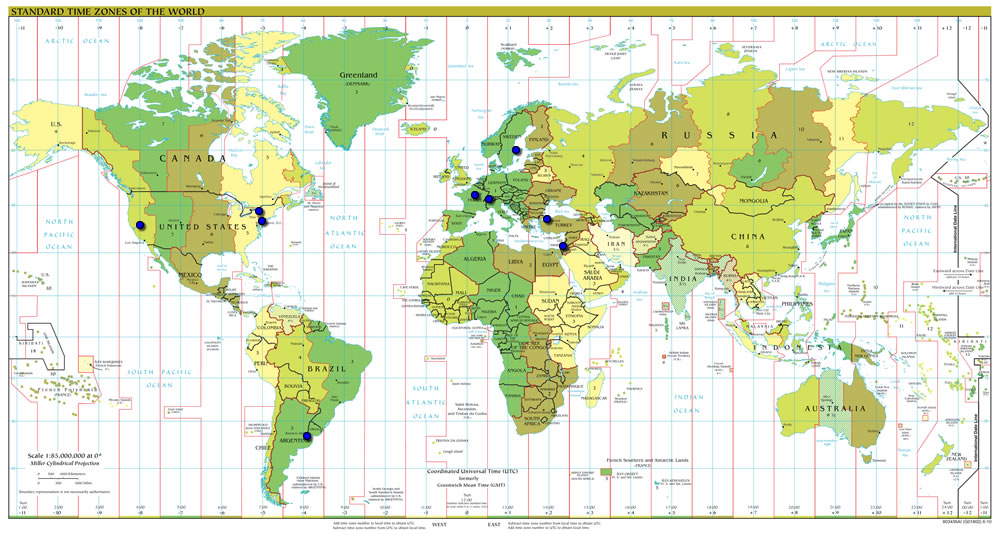

LDPL (LDPL, the Dinosaur Programming Language) is a language designed to be easy to understand and simple to write. Designed to be easy to learn and simple to use. We believe that coding should be easy and simple. Nothing should become a frustrating chore. Compiling source code should be easy and simple: a single, flagless command should be enough to compile any source code. Every statement in the language should do one and one thing only, not multiple things depending on the context. Complex, low level stuff like encoding, sockets, floating point number comparison, etc., should be dealt by the compiler, transparently to the user. Hard stuff should be made easier.
We understand that this philosophy may lead to longer source code, more verbose statements and extra steps to reach an end, but we also believe that it should make coding in LDPL easier and more enjoyable than in other languages.
As one user once put it, "Usually when I'm programming, I feel like I'm in a big fancy jet and there's a lot of turbulence and it's not going well but then all of a sudden it's smooth air again and the drink cart comes along and I get a ginger ale and it's great. But with LDPL, I feel like I'm a cub scout out in the woods with a box of matches and a hatchet and my Scout's Handbook (the LDPL Docs) just exploring and figuring it out as I go. Whenever I run into a problem I just check my handbook and, sure enough, there's a solution right there waiting for me!".
We want to make LDPL a language you'll love not because it lets you do many things in one line, nor because of the way it runs, nor because of how modern it is: but because it's designed to stay by your side and tell you everything's gonna be okay even when times get dark.
Obviously, each developer working on the LDPL project has their own aims and priorities, but it is possible to classify the goals we all share:
Create a complete, turing-complete programming language that is easy to use and understand, that is clean and minimal.
Design the language and its libraries in such a way that hard to do things become easier.
Develop a compiler that doesn't expect endless flags in order to build a source, that is fast and simple. Provide full source code access to developers and users, and integrate into it valuable contributions from anyone willing to contribute.
Mantain good relationship with all members of the LDPL community (users, developers, collaborators, etc.) and make everyone feel welcome. Everyone must be respected and their ideas taken into consideration.
Make the LDPL language, its compiler and its source code available for everyone for any purpose, with no restrictions. We strive to make our language robust and stable, and encourage users and companies alike to use whichever pieces they want to.
Do not let serious problems sit unsolved.
Mantain retrocompatiblity between releases.
Make a release approximately every three months.
LDPL started as an indie project and, as such, we did commit some mistakes when releasing and versioning our releases. As you may see in the news page, we jumped from LDPL 1.1.0 to 1.1.2 to 2.0.4, from 3.0.0 to 3.0.3, etc. We also did not have a proper release schedule, so releases were released as soon as they came out of the oven, leaving our users with no time to prepare for the next update.
While we consider this may have been a necessary bad when the project was at its very early stages, now that it is mature and stable we have aknowledged these are not good practices, as the growth of the project it is not consistent, predictable nor transparent to our users.
From LDPL 4.4 onwards this has changed. LDPL releases are issued once every approximately three months, only if enough new features were added to the language since the last stable release.
LDPL releases from LDPL 4.3 onwards implement semantic versioning: major.minor.patch. Major versions modify the language in a non-retrocompatible manner. Minor versions add features to the language in a retrocompatible way. Patch releases fix bugs found in already released versions. The initial release of a new LDPL version will be X.Y.0. In these cases, the patch number will be omitted (4.3 instead of 4.3.0).
Minor LDPL releases will be supported until a new minor version is released. Upgrading in this scenario should not be a problem as new minor versions are compatible with older minor versions. Major LDPL releases will still be supported for at least three months after a new major version is released.
This map approximates where our contributors live. If you have contributed to the LDPL project and your location isn't pinned, get in touch with us so we can mark it on the map.
